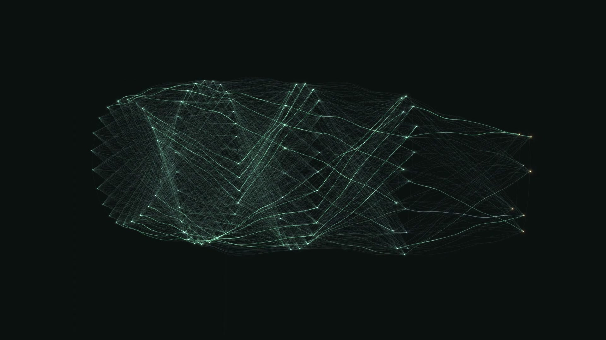
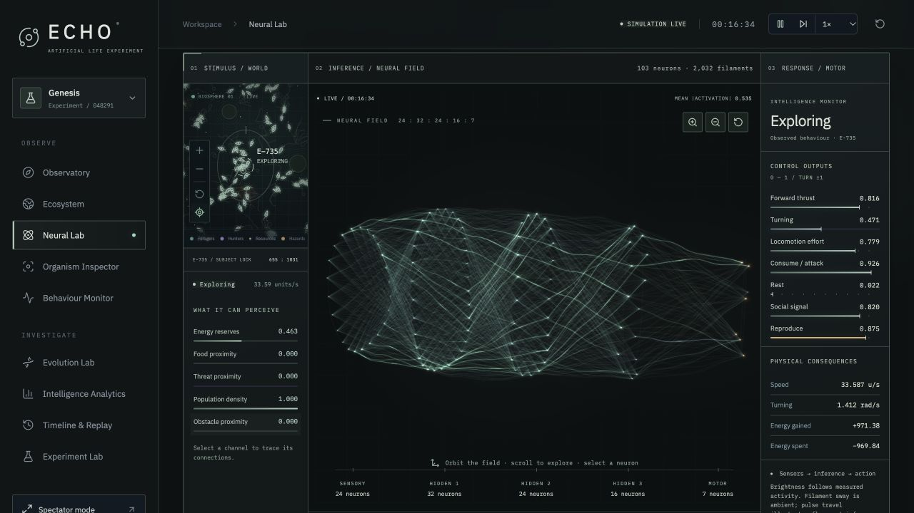
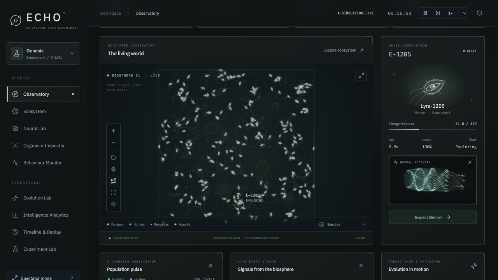
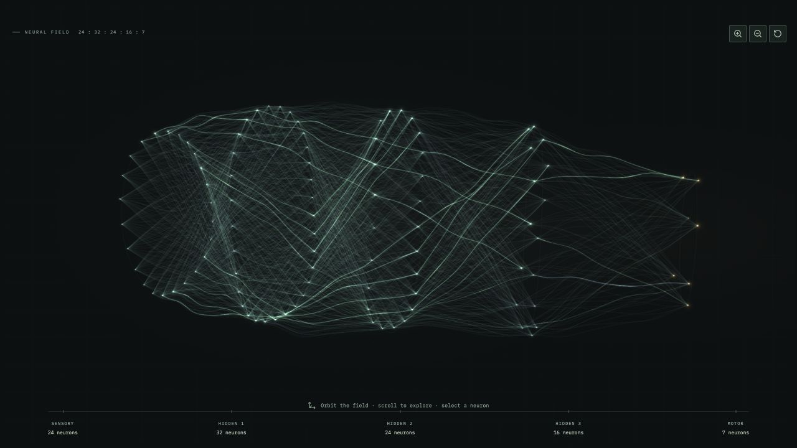
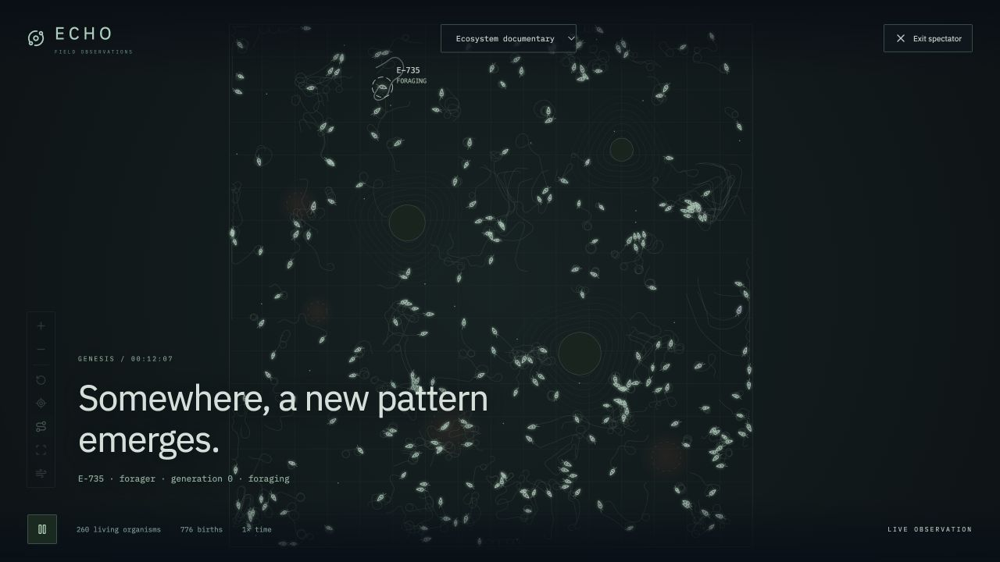

ECHO
Artificial Life Experiment
ECHO is a local-first artificial-life simulation that makes the relationship between perception, computation and behaviour visible. A living 2D ecosystem sits beside an interactive 3D neural field, revealing the connections and activations behind an organism’s actions. Offspring inherit mutated neural parameters and physiological traits, making it possible to explore adaptation across generations.
Full-stack development, simulation design and interactive data visualisation
Full-stack development, simulation design and interactive data visualisation
2026 / Artificial life / neural networks / interactive visualisationThe challenge.
Make an evolving simulated ecosystem understandable by connecting observable behaviour to the actual neural computation that drives it.
02 / THE RESPONSEInside the build.
A separate Node.js and TypeScript backend advances the world at a fixed 20 Hz, independently of the browser, with an HTTP API and WebSocket snapshots at up to 10 Hz. React, TypeScript and Vite power the observatory, using custom CSS and Lucide icons, with Canvas 2D for the ecosystem and Three.js, WebGL and custom GLSL shaders for the neural field. Local JSON autosaves, disk checkpoints and stored configurations keep experiments resumable.
From perception to action.
Each organism has a custom 24 → 32 → 24 → 16 → 7 feedforward network: 103 neurons, 2,032 weights, 79 biases and 2,111 parameters. Inference runs in TypeScript. Hidden layers and turning use tanh; the other outputs use sigmoid. Seven outputs control thrust, turning, locomotion effort, consumption or attack intention, rest, social signalling and reproductive intention. Physics and biological rules determine what happens next.
Connections you can inspect.
Every neural filament maps to a real weight. Activations and weighted contributions can be inspected alongside sensory inputs and motor outputs, with connectome, heatmap and influence views. Brightness follows measured neural data; ambient movement and travelling pulses illustrate activity, rather than measured processing latency.
Change across generations.
Founders begin with seeded viable pathways plus variation. Descendants inherit neural parameters and physiological traits with mutations. Survival and reproduction may produce population-level adaptation, but improvement is not guaranteed. There is no within-lifetime learning, backpropagation or reinforcement learning.
Sense the world
Compute & act
Inherit & mutate
- A continuous ecosystem with food, hazards, foragers, hunters, resource costs, reproduction and death
- Clickable sensory and motor channels, neuron contributions, layer isolation and strong-path filtering
- Same-input brain comparisons, parent–offspring differences and parameter surgery
- Lineage exploration, organism histories, measured telemetry and sampled replay
- Configurable scenarios, seeded experiments and cinematic spectator modes
- Verification uses Vitest, TypeScript checks and browser validation
The working result.
A working local research-style interface for observing neural control and experimenting with inheritance, mutation and ecological interactions. The project demonstrates custom simulation engineering, real-time client/server integration and data-faithful 3D visualisation.
The original work.
Real interface screenshots and direct Canvas/WebGL recordings from one saved simulation run. Population and generation values describe that run. The two silent clips preserve their captured timing.



